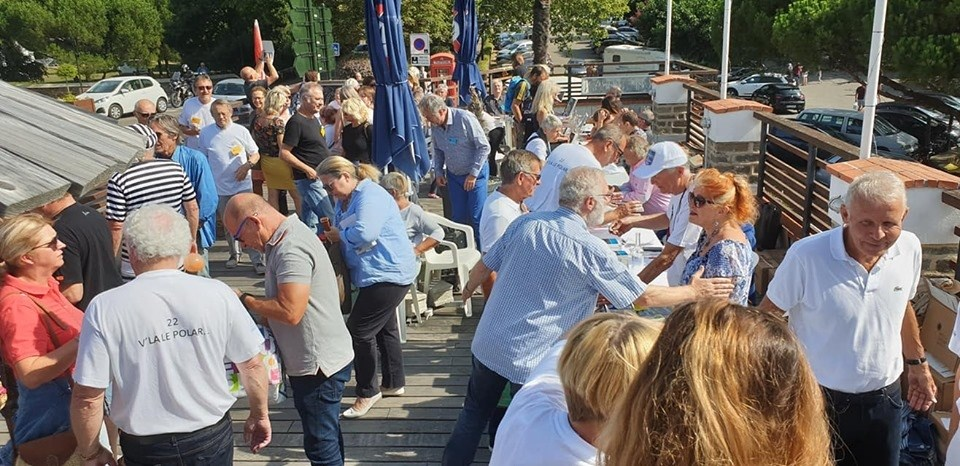
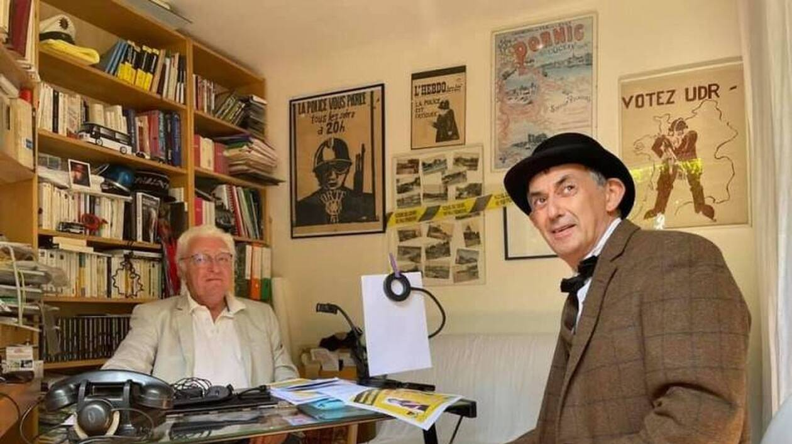
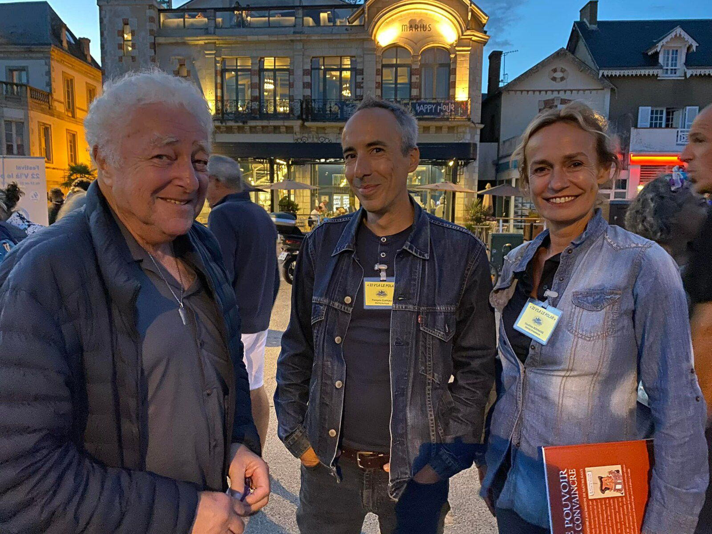

Editions 2020 & 2021
L'évènement est porté par l'association "Le polar à toutes les sauces", présidée par Jean-Marc Bloch, et a pour but d’organiser et de promouvoir le développement de manifestations culturelles autour du « polar » et de la littérature policière.
Malgré une situation sanitaire difficile nous avons pu maintenir ce festival sur ces deux années grâce notamment à la mairie de Pornic qui nous a autorisé à exploiter des lieux extérieurs pour organiser les conférences. Contrairement à la première année le festival s’est déroulé sur 4 jours (2 jours en 2019) , ce qui nous a permis d’étoffer notre offre d’évènements et de faire venir un plus grand nombre d’intervenants notamment dans le monde du cinéma avec la présence de têtes d’affiche : Sandrine BONNAIRE et Olivier MARCHAL. La présence de personnalités reconnues du public participe fortement à la notoriété du festival.


